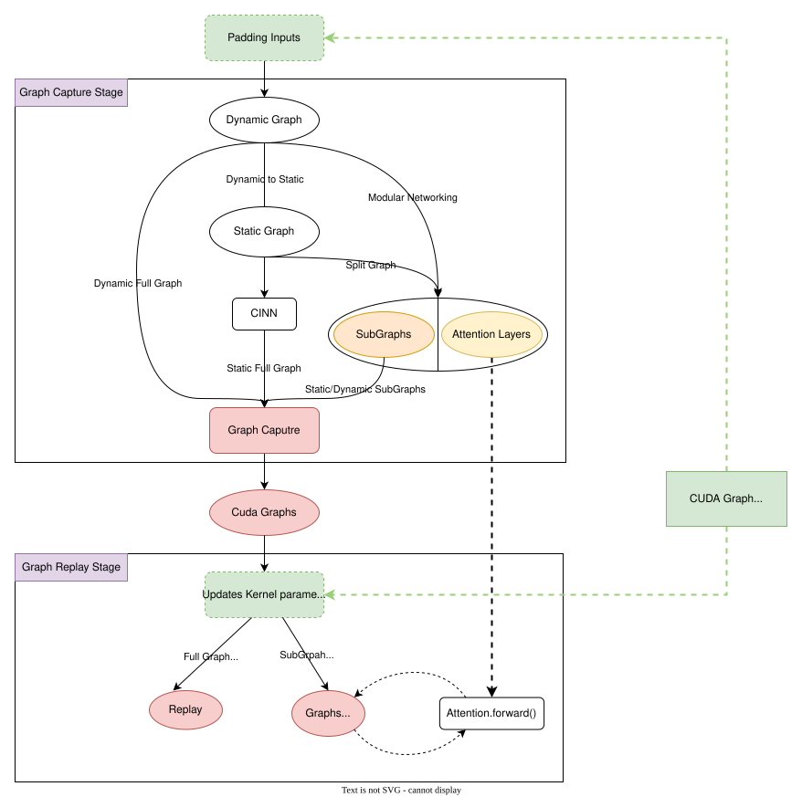

Graph optimization technology in FastDeploy
FastDeploy's GraphOptimizationBackend integrates a variety of graph optimization technologies:
+ CUDA Graph：A mechanism that starts multiple GPU operations with a single CPU operation reduces overhead and improves performance
-
StaticGraph to DynamicGraph：Convert dynamic graphs to static graphs, optimize calculation graphs and improve execution efficiency using global graph structure information
-
CINN Neural Network Compiler：Perform IR conversion, Kernel fusion, Kernel generation and other computational graph compilation optimization methods based on static graphs to achieve comprehensive optimization
Any dynamic situations such as data-dependent control flow, Host-Device synchronization, model input of address/shape changes, dynamic Kernel execution configuration, etc. will cause CUDAGraph Capture/Replay to fail. The scenarios facing LLM inference are dynamic input lengths, dynamic Batch Size, and flexible Attention implementation and multi-device communication, making CUDAGraph difficult to apply.
The mainstream open source solution implements CUDA Graph based on static graphs, with a deep technology stack. FastDeploy not only supports static graphs, neural network compilers, and CUDAGraph combination optimization, but also supports directly applying CUDAGraph in dynamic graphs, which has lower development costs, but the dynamic situations faced are more complex.
FastDeploy's GraphOptimizationBackend design architecture is as follows, some functions are still under development, so it is recommended to read the first chapter carefully using restrictions.

1. GraphOptimizationBackend Current usage restrictions
In the CUDAGraph multi-device inference task, you need to use the Custom all-reduce operator to perform multi-card all-reduce.
Before version 2.3, CUDAGraph and Custom all reduce were not enabled by default. Since version 2.3, CUDAGraph and Custom all reduce have been enabled by default.
1.1 The multi-device scene needs to be enabled Custom all-reduce
The FLAGS_max_partition_size environment variable controls the gridDim execution configuration of Kernel in CascadeAppend Attention, and dynamic execution configuration will cause CUDAGraph execution to fail.
PR#3223 Fixed this issue, but it still existed in Release versions before 2.2.
Problem self-checking method:
+ Calculate div_up(max_model_len, max_partition_size) based on the value of FLAGS_max_partition_size (default is 32K) and max_model_len in the startup parameters. The result is greater than 1 and it can run normally when it is equal to 1.
Solution:
1. Adjust the values of FLAGS_max_partition_size and max_model_len without triggering dynamic execution of configuration.
2. Close CUDAGraph
2. GraphOptimizationBackend related configuration parameters
Currently, only user configuration of the following parameters is supported：
+ graph-optimization-config : Dict[str, Any]
+ graph_opt_level: int = 0
+ use_cudagraph: bool = True
+ cudagraph_capture_sizes : List[int]
Before version 2.3, it needs to be enabled through --use-cudagraph.CUDAGraph has been enabled by default in some scenarios at the beginning of version 2.3. CUDAGraph will be automatically closed for functions that are not compatible with CUDAGraph (speculative decoding, multi-mode model).You can also manually control the CUDAGraph by setting --graph-optimization-config .
The graph_opt_level parameter within --graph-optimization-config is used to configure the graph optimization level, with the following available options:
+ 0: Use Dynamic compute graph, default to 0
+ 1: Use Static compute graph, during the initialization phase, Paddle API will be used to convert the dynamic image into a static image
+ 2: Base on Static compute graph, use the compiler(CINN, Compiler Infrastructure for Neural Networks) of Paddle to compile and optimize
In general, static graphs have lower Kernel Launch overhead than dynamic graphs, and it is recommended to use static graphs. For adapted models, FastDeploy's CudaGraph can support both dynamic and static graphs simultaneously.
When CudaGraph is enabled in the default configuration, a list of Batch Sizes that CudaGraph needs to capture will be automatically set based on the 'max_num_deqs' parameter. The logic for generating the list of Batch Sizes that need to be captured is as follows：
- Generate a candidate list with a range of [1,1024] Batch Size.
# Batch Size [1, 2, 4, 8, 16, ... 120, 128]
candidate_capture_sizes = [1, 2, 4] + [8 * i for i in range(1, 17)]
# Batch Size (128, 144, ... 240, 256]
candidate_capture_sizes += [16 * i for i in range(9, 17)]
# Batch Size (256, 288, ... 992, 1024]
candidate_capture_sizes += [32 * i for i in range(17, 33)]
- Crop the candidate list based on the user set 'max_num_deqs' to obtain a CudaGraph capture list with a range of [1,' max_num_deqs'].
Users can also customize the batch size list that needs to be captured by CudaGraph through the parameter cudagraph_capture_sizes in--graph-optimization-config:
--graph-optimization-config '{"cudagraph_capture_sizes": [1, 3, 5, 7, 9]}'
2.1 CudaGraph related parameters
Using CudaGraph incurs some additional memory overhead, divided into two categories in FastDeploy: + Additional input Buffer overhead + CudaGraph uses dedicated memory pool, thus holding some intermediate activation memory isolated from main framework
FastDeploy initialization sequence first uses gpu_memory_utilization parameter to calculate available memory for KVCache, after initializing KVCache then uses remaining memory to initialize CudaGraph. Since CudaGraph is not enabled by default currently, using default startup parameters may encounter Out of memory errors, can try following solutions:
+ Lower gpu_memory_utilization value, reserve more memory for CudaGraph.
+ Lower max_num_seqs to decrease the maximum concurrency.
+ Customize the batch size list that CudaGraph needs to capture through graph_optimization_config, and reduce the number of captured graphs by using cudagraph_capture_sizes
- Before use, must ensure loaded model is properly decorated with
@support_graph_optimization.
```python # 1. import decorator from fastdeploy.model_executor.graph_optimization.decorator import support_graph_optimization ...
# 2. add decorator @support_graph_optimization class Ernie4_5_Model(nn.Layer): # Note decorator is added to nn.Layer subclass ...
# 3. modify parameter passing in ModelForCasualLM subclass's self.model() class Ernie4_5_MoeForCausalLM(ModelForCasualLM): ... def forward( self, ids_remove_padding: paddle.Tensor, forward_meta: ForwardMeta, ): hidden_states = self.model(ids_remove_padding=ids_remove_padding, # specify parameter name when passing forward_meta=forward_meta) return hidden_statesfrom fastdeploy.model_executor.graph_optimization.decorator import support_graph_optimization ...
@support_graph_optimization class Ernie45TModel(nn.Layer): # Note decorator is added to nn.Layer subclass ... ```